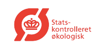
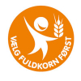
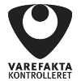
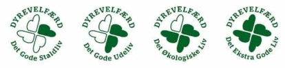

Even though, you moved abroad, you might want to live healthy. To follow this lifestyle, you should read the ingredients on the packages. Well, in Denmark without some Danish you’re not really able to check what products contain.
Luckily, there are some visible labels which can help you in this case. You may not have taken them into consideration, so it’s time to discuss it.
Keyhole
The Danish Veterinary and Food Administration’s Keyhole label can help you identify the healthier choices when buying food.
Foods labelled with the Keyhole symbol contain less fat, sugars, salt and more dietary fibre than food products of the same type not carrying the symbol.
Eco-label
The red eco-label with the text "Statskontrolleret økologisk" (State-controlled organic) states that it is the Danish authorities have controlled the farm or the company that has last processed, packed or labeled organic products.
Whole-grain label
This is an orange label with the text “Vælg fuldkorn først” (Select whole grain first). The logo should make it easier for consumers to choose products containing whole grains.
“Be aware of the facts” – Varefata
TThis is the only labeling scheme in Denmark, where a manufacturer or importer can get their goods labeled and systematically controlled by an independent body.
If a product declaration is provided with this logo, it means that the product is also checked continuously by random check. This ensures that there is consistency between what is stated in a product declaration and the actual content of the product.
Animal welfare label
This is a clover with four leaves. If the cow had happy life on the field it comes with four green leaves. The more green the happier life of an animal.
This label aims to improve animal welfare for more Danish pigs through a labeling scheme and through market-based animal welfare.
